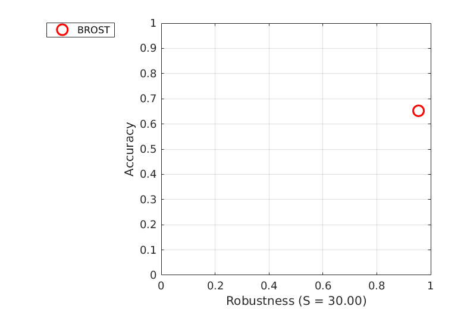
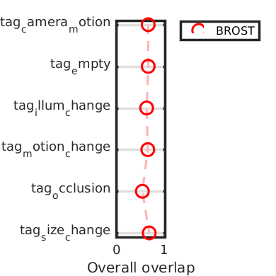
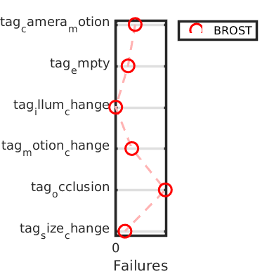
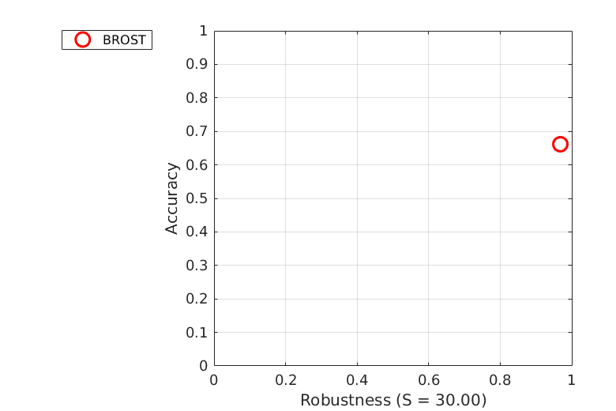
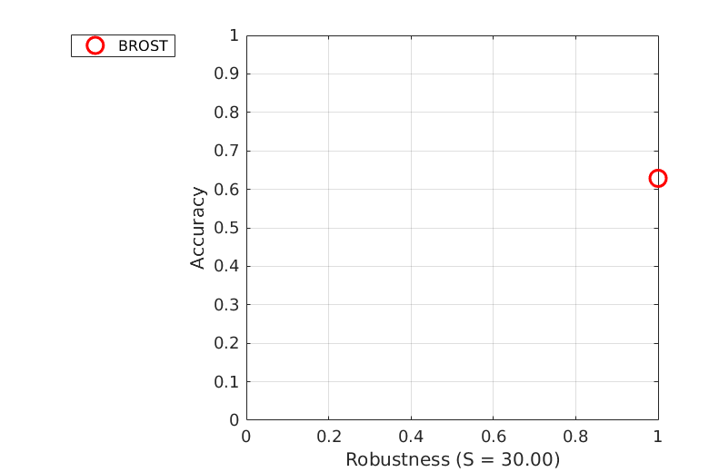
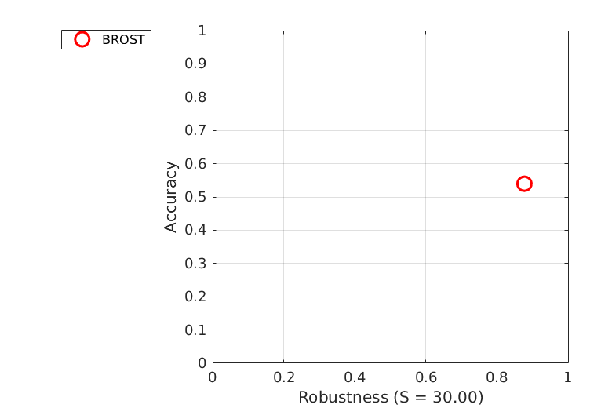

Accuracy-Robustness
Experiment baseline
AR plot for experiment baseline (mean)

AR plot for experiment baseline (weighted_mean)
AR plot for experiment baseline (pooled)
Accuracy
| tag_camera_motion | tag_empty | tag_illum_change | tag_motion_change | tag_occlusion | tag_size_change | Mean | Weighted mean | Pooled | |
|---|---|---|---|---|---|---|---|---|---|
| BROST | 0.6611 | 0.6616 | 0.6286 | 0.6528 | 0.5397 | 0.6826 | 0.6377 | 0.6522 | 0.6577 |
Robustness
| tag_camera_motion | tag_empty | tag_illum_change | tag_motion_change | tag_occlusion | tag_size_change | Mean | Weighted mean | Pooled | |
|---|---|---|---|---|---|---|---|---|---|
| BROST | 14.4667 | 9.0000 | 0.0000 | 6.0000 | 9.8667 | 3.0000 | 7.0556 | 9.2989 | 31.4667 |
Detailed plots

Orderings for overall overlap

Orderings for failures

AR plot for tag tag_camera_motion in experiment baseline

AR plot for tag tag_empty in experiment baseline

AR plot for tag tag_illum_change in experiment baseline
AR plot for tag tag_motion_change in experiment baseline

AR plot for tag tag_occlusion in experiment baseline

AR plot for tag tag_size_change in experiment baseline